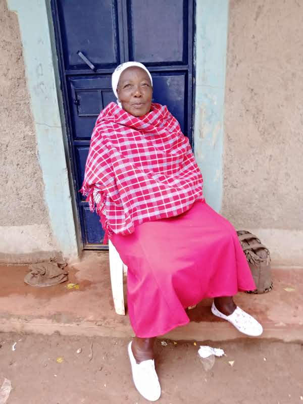
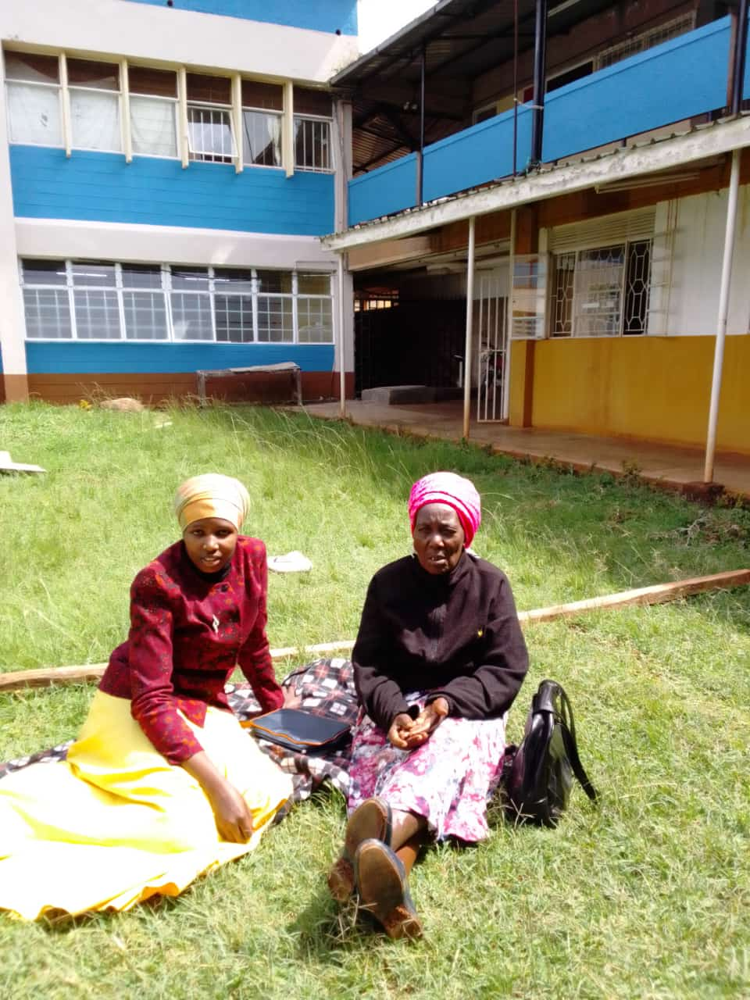

THE LATE MAMA JANE NYAANGA (MOSOTA) WAS BORN IN 1945, TO THE FAMILY OF THE LATE SAMWEL KING'OINA (MAKAMBU) AND THE LATE ALIXINA KEMUNTO OF KEBABE VILLAGE, BOKURATI II SUB LOCATION, EKERENYO LOCATION, ITIBO WARD, NYAMIRA NORTH SUB COUNTY.
SISTER TO:
THE LATE NYAKAMBI, BOSIBORI, THE LATE BOTA, THE LATE DAMARIS.
THE LATE ANDREW KERAMA, JOSECK, SIMION, JOYCE, THOMAS (TANZANIA), CHOGO BOTA, JOASH, GODFREY, OPENDA AND OTHERS.
COUSIN TO:
HENRY AINDA, DAUDI, KWAMBOKA AND OTHERS.
INITIATION:
SHE UNDERWENT THE KISII CUSTOM OF INITIATION IN 1955
SCHOOLING:
SHE STARTED SCHOOLING AT KEBABE INTERMEDIATE SCHOOL IN 1957. SHE SAT FOR HER C.E.E. IN 1960. SHE JOINED CLASS 5 IN 1961 FOR HER INTERMEDIATE AND SAT FOR HER K.A.P.E. IN 1965 AT THE SAME SCHOOL.
MARRIAGE:
THE LATE JANE KERUBO GOT MARRIED TO THE LATE SILVESTER NYAANGA IN 1967 AND WAS BLESSED WITH EIGHT CHILDREN NAMELY: CHARLES, DORICE, EVANS, DOUGLAS, EDINAH, JUDICAH, FRANCINE, DAVID.
CHRISTIANITY:
JANE GREW UP AS A SEVENTH DAY ADVENTIST UNTIL LATER IN HER MARRIAGE WHEN SHE JOINED CATHOLIC CHURCH WHEN THEY DID THEIR WEDDING. SHE REMAINED A CATHOLIC FAITHFUL. SHE RESPECTED HER CHILDREN'S FAITHS UNTIL HER DEMISE.

WORK LIFE:
JANE KERUBO LOVED HORTICULTURE AND DEVOTED HERSELF TO ENSURE FOOD SECURITY AND MEETING HER PERSONAL NEEDS AND HER FAMILY'S.
HEALTH:
JANE KERUBO REMAINED OF GOOD HEALTH UNTIL AFTER THE DEATH OF HER HUSBAND IN 2018.
SHE DEVELOPED COMPLICATIONS IN 2020 AND WAS DIAGONISED OF HIGH BLOOD PRESSURE IN 2020. SHE WAS PUT UNDER MANAGEMENT DRUGS. SHE ALSO COMPLAINED OF BACK ACHES, WHERE SHE WOULD ATTEND REGULAR CLINIC FOR PHYSIOTHERAPY AT EKERENYO SUB DISTRICT HOSPITAL.
SHE LATER IN 2024 AUGUST DEVELOPED ABDOMINAL PAIN. SHE WENT TO NYANGENA HOSPITAL FOR A CT SCAN, WHERE SOME MASS WAS VISIBLE IN THE UTERUS AND SOME DEFECT IN THE PULMONARY VEIN. SHE WAS ADVISED TO BE ADMITTED AT NYAMIRA LEVEL 5 AWAITING TO UNDERGO A BIOPSY.
SHE SUCCUMBED IN THE WEE HOURS OF 2ND SEPTEMBER 2024. MAMA JANE KERUBO DIED AT THE AGE OF 79 YEARS.
REST IN PEACE MUM.
TRIBUTES
FROM SONS:
MAMA YOUR CREDIBILITY AS A MOTHER CAN'T BE QUESTIONED, DENIED OR DISPUTED. YOU WERE AN INCREDIBLE MOTHER WHOSE GENEROUSITY CROSSED BORDERS. YOU WERE A GOOD LISTENER TO OUR CONCERNS AND ENSURED YOU WENT ABOVE AND BEYOND YOUR MEANS TO MAKE US SATISFIED. YOU STUCK TO THE TRUTH AND CORRECTED ANY WRONG WITH LOVE. IN YOUR CUSTODY, YOU ENSURED ENOUGH FOOD SECURITY FOR YOUR FAMILY. YOU TAUGHT US THE ESSENCE OF HARD WORK TO ACHIEVE ANYTHING IN LIFE. MAMA YOU ALWAYS WISHED US A HAPPY LIFE. FARE THEE WELL MAMA.
FROM DAUGHTERS:
MAMA WE ARE SUDDENED THAT YOU LEFT US AT A TIME LEAST EXPECTED. WE CAN'T WINK AT THE LOVELY MOMENTS WE ENJOYED TOGETHER. WE WILL SINCERELY MISS YOUR HUMOUR, WELCOMING TONE, JOKES AND EVER SMILING FACE. YOUR HARDWORK TO MAKE US HAPPY CANNOT BE RUBBISHED. MAMA YOUR KITCHEN NEVER LACKED FOOD AND YOU ALWAYS WANTED ANYBODY TO HAVE A BITE ON YOUR TABLE.
MAY YOU REST IN PEACE MAMA.
FROM IN-LAWS:
MUM, THE MOTHER OF OUR LOVERS. OUR GUIDE, COMPANION, TEACHER, COUNSELLORAND FRIEND. YOU WERE ALWAYS THERE TO ENCOURAGE, TO CORRECT. YOUR CONSTRUCTIVE JOKES CANNOT BE WISKED AWAY. "MAMA NOIKE ASETWIKIRE," BYE MAMA UNTIL WE MEET AGAIN.
FROM GRAND CHILDREN:
WE WILL MISS YOUR LAUGHTER, JOKES AND ENCOURAGEMENT TO ALWAYS WORK HARD TO ACHIEVE OUR GOALS IN LIFE. "SAUTI YA NDIZI" WAS A SLOGAN DURING CHRISTIMAS CELEBRATIONS. AS WE LEFT FOR SCHOOL YOU ALWAYS TOLD US, "MSISOME WATOTO WENGINE, SOMA VITABU." AS YOU BID US BYE, YOU ALWAYS GAVE US SOME LITTLE COINS ACCORDING TO YOUR ABILITY. WE PROMISE IN YOUR ABSENCE TO WORK HARD TOWARDS YOUR LONG LASTING LEGACY.
KUDOS NYANYA
Light a Candle
Click the button below to light a candle in memory of Jane.
Leave Your Condolences
Messages of Condolence
// After adding condolence
alert('Thank you for your condolence.');
condolence.scrollIntoView({ behavior: 'smooth' });
SUBMITTED CONDOLENCES
Faith Maraga
Although we have spoken recently.I wanted to write and tell you how sorry I am of your loss.Shosh was such a special person that no words are really adequately.She brought pleasure to everyone she met and will be sadly missed.People tell how much they valued shosh's friendship.Fare the well🕊 till we meet again
Faith Mokua
My heart is heavy with grief over your sudden dismiss that has left a profound emptiness in my heart. You were not just a grandmother but a beacon of love, strength ,kindness,source of endless love and warmth that has made a lasting impact on me.l will forever cherish and treasure the countless moments we spent and shared together from your comforting advice to your infectious laughter, your stories and life lessons, you have really shaped me.your legacy of love and compassion will continue to warmth me.You used to tell me every now and then on phone calls ""MBUYA MONO BABA KANYAKONG'INYORA KINDE MOYO CHITAYA CHITARARIMA"" you have left an indelible mark on my heart.I promise to honor your memories by carrying forward your love and values.May your memories be a blessings and bring comfort.You will always be deeply missed and forever remembered,timoka buya baba fare well thee we shall meet that bright morning the Lord love you so much baba kwaheri

Jabez Mokua
Your untimely death has brought a big gap ,,,,,, "askah , askah, kibagendi" was the song you used to sing,,,,,, we loved you much and we believe one day we will meet in heaven,,,,,,,,, R. I. P grandma fare well,,,,,, shalom,,,,,,,